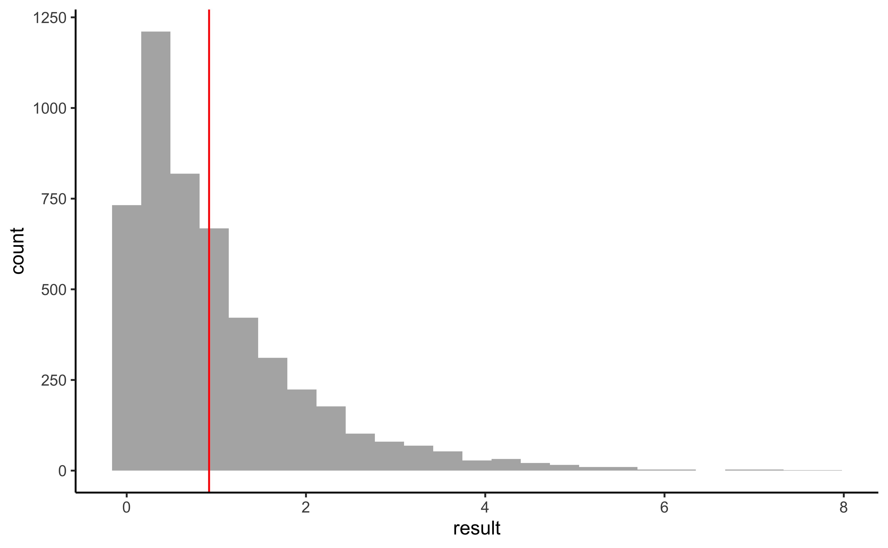

Intro
Analyzing the cartoon dataset
Read Data
cartoon <- readxl::read_xlsx("../../data/Chhota Bheem vs Doraemon vs Dragon Tales.xlsx")
cartoonMunging
cartoon_modified %>%
crosstable(Rating ~ Cartoon + Gender) %>%
as_flextable()Gender |
Male |
Female |
|||||
|---|---|---|---|---|---|---|---|
Cartoon |
Chota Bheem |
Doraemon |
Dragon Tales |
Chota Bheem |
Doraemon |
Dragon Tales |
|
Rating |
Min / Max |
5.0 / 10.0 |
1.0 / 10.0 |
1.0 / 10.0 |
3.0 / 8.0 |
4.0 / 10.0 |
6.0 / 10.0 |
Med [IQR] |
7.0 [6.0;8.0] |
8.0 [6.2;9.0] |
7.0 [5.5;7.8] |
6.0 [6.0;7.8] |
7.0 [6.0;8.5] |
8.0 [7.0;8.5] |
|
Mean (std) |
7.0 (1.4) |
7.2 (2.8) |
6.6 (2.3) |
6.4 (1.5) |
7.3 (1.8) |
7.9 (1.3) |
|
N (NA) |
15 (0) |
15 (0) |
15 (0) |
15 (0) |
15 (0) |
15 (0) |
|
cartoon_modified %>%
gf_density(~ Rating | Cartoon,
colour = ~ Cartoon, fill = ~ Cartoon, alpha = 0.3) %>%
gf_fitdistr(dist = "norm") %>%
gf_refine(theme_classic())Not really Gaussian? Some look ok!!
Shapiro Test
shapiro.test(cartoon_modified %>%
filter(Cartoon == "Chota Bheem") %>%
select(Rating) %>%
as_vector()) # Can't handle even single col data frame
Shapiro-Wilk normality test
data: cartoon_modified %>% filter(Cartoon == "Chota Bheem") %>% select(Rating) %>% as_vector()
W = 0.9515, p-value = 0.1854shapiro.test(cartoon_modified %>%
filter(Cartoon == "Doraemon") %>%
select(Rating) %>%
as_vector()) # Can't handle even single col data frame
Shapiro-Wilk normality test
data: cartoon_modified %>% filter(Cartoon == "Doraemon") %>% select(Rating) %>% as_vector()
W = 0.90877, p-value = 0.01385shapiro.test(cartoon_modified %>%
filter(Cartoon == "Dragon Tales") %>%
select(Rating) %>%
as_vector()) # Can't handle even single col data frame
Shapiro-Wilk normality test
data: cartoon_modified %>% filter(Cartoon == "Dragon Tales") %>% select(Rating) %>% as_vector()
W = 0.9181, p-value = 0.02395Chhota Bheem Ratings are normal!! But the others aren’t!! India is India!
Inference
ANOVA
anova_model <- aov(Rating ~ Cartoon, data = cartoon_modified)
anova_model %>%
supernova::supernova() Analysis of Variance Table (Type III SS)
Model: Rating ~ Cartoon
SS df MS F PRE p
----- --------------- | ------- -- ----- ----- ----- -----
Model (error reduced) | 6.927 2 3.463 0.919 .0207 .4028
Error (from model) | 327.905 87 3.769
----- --------------- | ------- -- ----- ----- ----- -----
Total (empty model) | 334.832 89 3.762 ANOVA says the reduction in error Sum of Squares is merely 6.97! The p.value is \(0.4028\) so unlikely that the shows are different in mean rating!
TukeyHSD(anova_model) %>%
broom::tidy() %>%
gf_errorbar(conf.low + conf.high ~ contrast, color = ~ contrast, width = 0.2, linewidth = 1) %>%
gf_point(estimate ~ contrast) %>%
gf_hline(yintercept = 0, linetype = "dashed") %>%
gf_theme(theme_classic()) %>%
gf_refine(coord_flip())
###
TukeyHSD(anova_model) %>%
ggiraphExtra::ggHSD() %>%
gf_theme(theme_classic()) %>%
gf_theme(theme(axis.text.y = element_text(size = 8, angle = 0)))
All confidence intervals straddle 0 so there is no difference in mean score across the Cartoons
Permutation Test
Just for kicks, a permutation test
[1] 0.9189246##
perm_anova_dist <- do(4999) * aov(Rating ~ shuffle(Cartoon), data = cartoon_modified) %>% supernova() %>% pluck(1,6,1)
head(perm_anova_dist)gf_histogram(~ result, data = perm_anova_dist) %>%
gf_vline(xintercept = ~ F_stat, color = "red") %>%
gf_theme(theme_classic())
prop(perm_anova_dist$diffmean <=F_stat)prop_TRUE
NaN Again the null distribution from permutations staddles the observed mean difference and hence we cannot reject the NULL Hypothesis that there is no difference between Male and Female pocket moneys.